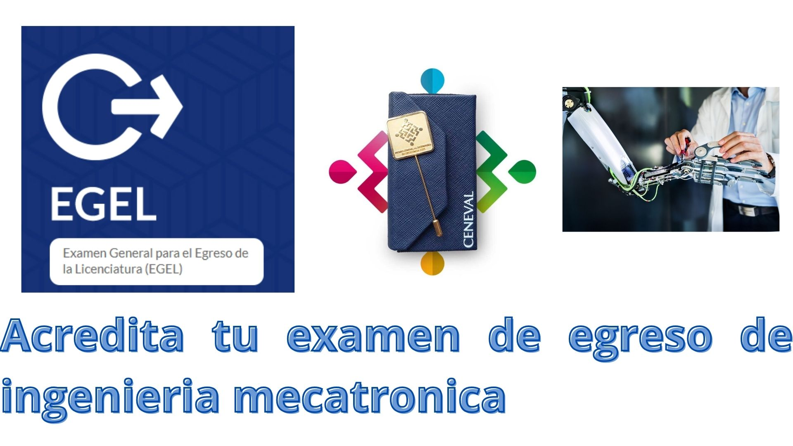

📘 Objetivo del Curso
Este curso está diseñado para prepararte de manera integral para el examen EGEL Plus en Mecatrónica. Aprenderás los temas clave, desarrollarás habilidades prácticas y adquirirás estrategias efectivas para responder con éxito el examen.
📚 Contenido del Curso
- 🔹 Fundamentos de matemáticas avanzadas y física aplicada.
- 🔹 Diseño y análisis de sistemas mecánicos.
- 🔹 Electrónica y control: teoría y práctica.
- 🔹 Automatización industrial y robótica.
- 🔹 Simulación y modelado de sistemas mecatrónicos.
- 🔹 Estrategias para responder el examen con eficiencia.
⏳ Duración del Curso
Clases intensivas de 50 horas distribuidas en módulos semanales, con teoría, ejercicios prácticos y simulacros de examen.
✅ Requisitos Previos
- 💻 Conocimientos básicos en mecánica, electrónica y programación.
- 📘 Interés en aprobar con excelencia el EGEL Plus en Mecatrónica.